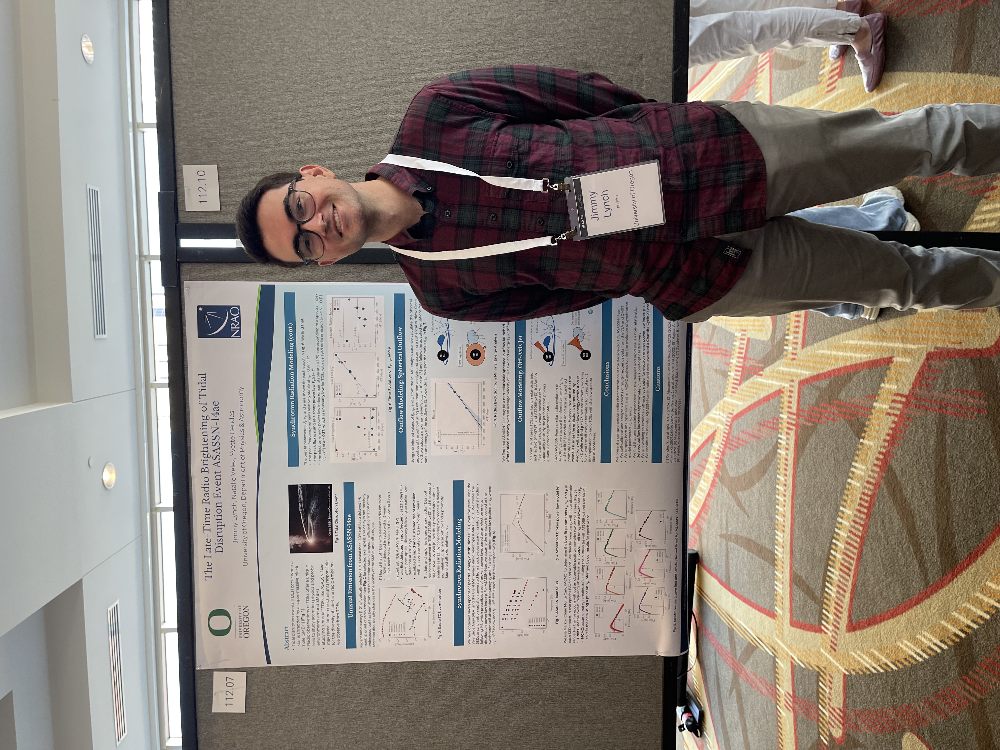
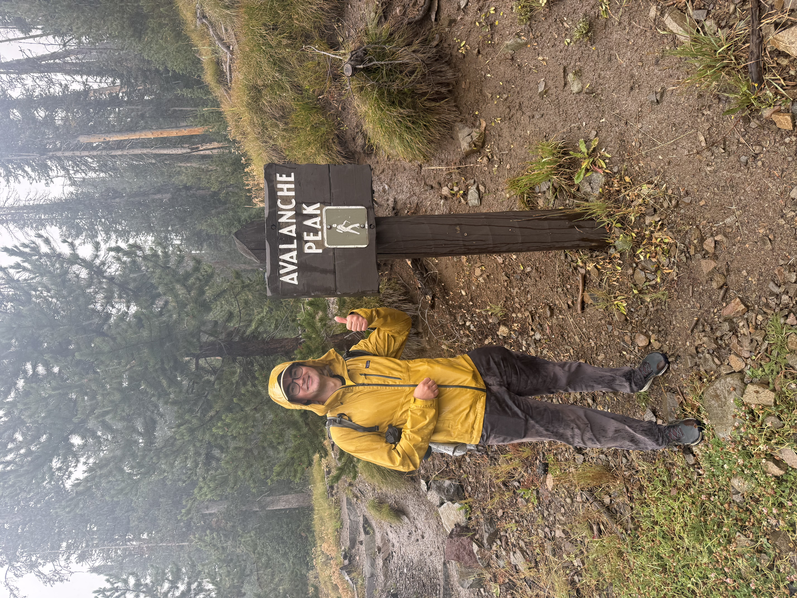

About Me

I'm a physics PhD student at the University of Oregon specializing in radio observations of astronomical transients. I'm primarily interested in the late-time radio emission from tidal disruption events (TDEs), which can help us uncover the fundamental physics of accreting black holes. I'm advised by Prof. Yvette Cendes, and we are part of the Institute for Fundamental Science (IFS) in the Department of Physics & Astronomy.
Before starting my PhD, I spent two years as a research scientist at the LM Advanced Technology Center (ATC) in Palo Alto, CA. I split my time between the Advanced Materials directorate and the LM Solar and Astrophysics Lab (LMSAL). My main projects involved a) using active machine learning techniques to discover novel metallic alloys and b) using convolutional autoencoders to denoise solar images. I also supported many additional efforts across materials modeling and design, and I had a run in or two with experimental chemistry.

In Spring 2021, I graduated magna cum laude from the University of Pennsylvania with a B.A. in Physics and Astronomy. My research interests ebbed and flowed during my time at Penn, ranging from analyzing the mechanics of origami to discovering optical counterparts of globular cluster X-ray sources to tracing the structure of neutral hydrogen through cosmological simulations. It's safe to say that I enjoy physics and astronomy research of any kind, though I have uncovered a love of the explosive transient sky.
Outside of science, I enjoy reading, writing, and painting. I'm an avid fan of playing and designing board games and card games. I travel a ton and—in part due to my upbringing as a military brat—have visited 35 states and 37 countries, with dreams to visit many more. Eugene is a beautiful town to walk and bike around, so I've also spent a good amount of time wandering around with friends. I also enjoy hiking—one of the mandatory scientist hobbies—and I've taken every visiting friend up the Misery Ridge trail at Smith Rock State Park.